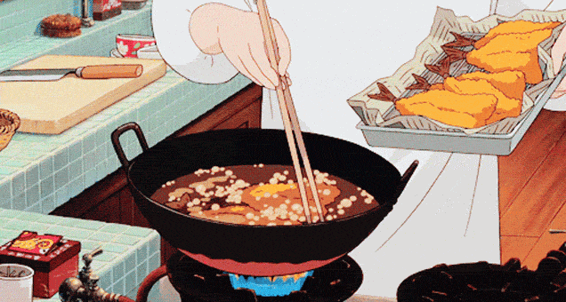

iconic studio
ghibli food

Food appears as its best, exaggerated self in anime. The medium takes the most attractive and appetizing aspects of food and enhances them: Every soft pudding has an irresistible luster, and each heaping bowl of noodles is wreathed in just the right amount of steam. While examples of perfectly presented food may be found in many anime, within the anime-food loving sub-subculture, some of the most popular scenes are from movies made by Studio Ghibli. Ghibli is seen as one of the most influential animation studios in the world, a reputation built on the critical acclaim and box office success of movies like My Neighbor Totoro, Princess Mononoke, and Spirited Away.
The food scenes in Studio Ghibli productions, particularly the most famous ones from Miyazaki’s movies, are distinct from other anime in that the narratives slow down to accommodate the cooking, eating, and sharing of food. These scenes are often tightly intertwined with characters’ narratives or the overarching storyline. From the tiniest details of a cooking sequence, like an eight-year-old chopping vegetables in a way that suggests she’s had to do it for years because of an absent parent, to the presentation of beautiful dishes, like a steaming fish pie with a golden brown fish carved into its crust, the focus on preparing and enjoying food seems to make these animated worlds come to life.